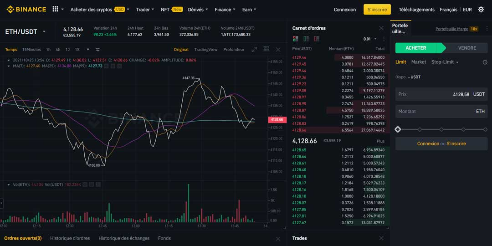

Robot de trading
Algorithme
80%
Présentation
Ce projet est un projet personnel. Il s’agit d’un robot de trading de crypto monnaie. Le robot se base sur différentes données récupérées via l’API du site Binance. Avec ces indicateurs le robot essaie de savoir quand acheter et vendre.
Ce robot est déjà fonctionnel mais il nécessite des ajustements de configuration pour intégrer dans sa stratégie les frais appliqués par la plateforme.

Technologies utilisées
Pour réaliser cet algorythme deux technologies on été utilisées.
Pour la récupération des données (prix, quantité vendue ... ), tout passe par l’API de Binance qui permet également l’envoi d’ordre d’achat et de vente.
Pour l’analyse et les appels à l’API, tout se fait avec du Python.